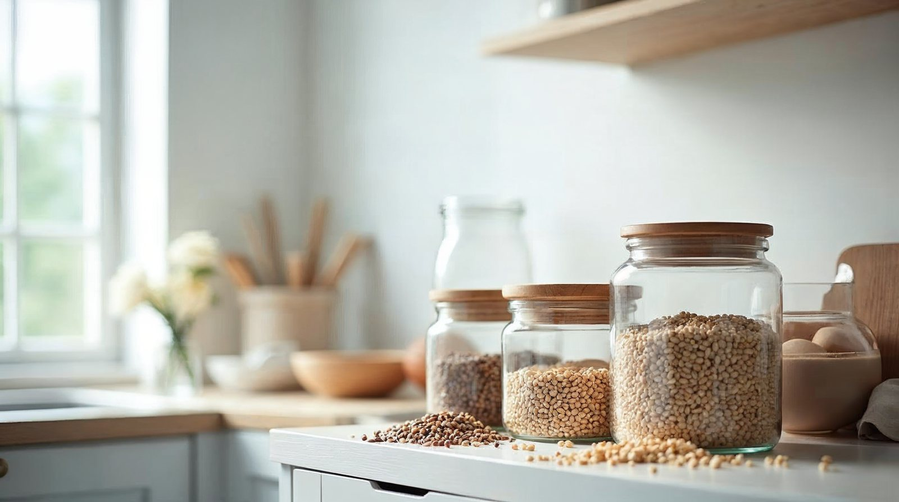
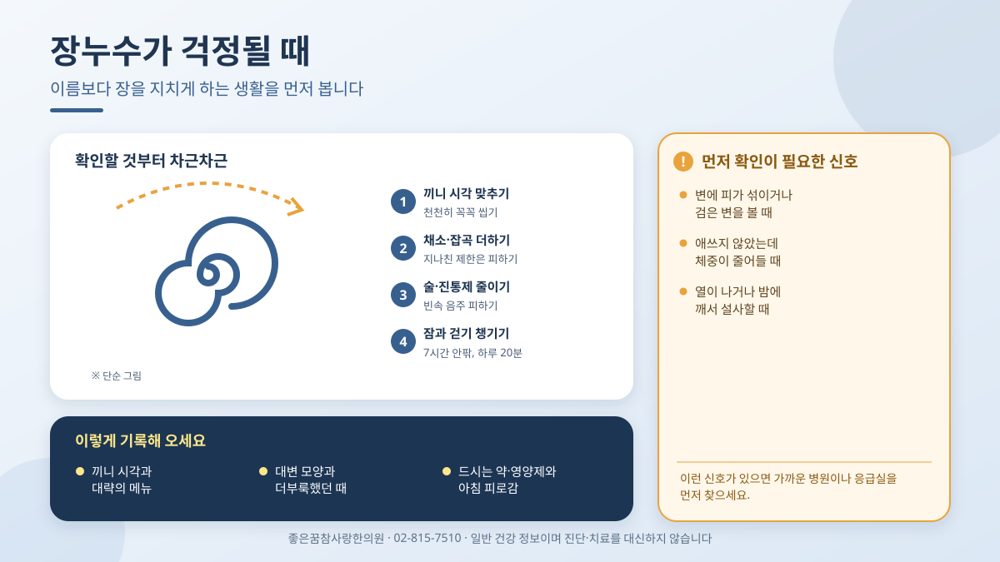

이종호 한의사 감수좋은꿈참사랑한의원 대표원장 (한의사 면허번호 19769)발행 2026-11-26 · 수정 2026-11-26
이 글의 차례
밤늦게 휴대전화를 들여다보다 '장누수 증후군'이라는 말을 봅니다. 더부룩함, 피로, 피부 트러블, 머리가 맑지 않은 느낌까지 적힌 증상이 모두 내 이야기 같습니다. 장에 구멍이 나서 나쁜 것이 몸속으로 새어 들어간다는 설명에 덜컥 겁이 납니다.
요즘 진료실에서 이 말을 꺼내시는 분이 부쩍 늘었습니다. 어떤 분은 해외 검사 키트를 사 보셨고, 어떤 분은 영양제를 몇 가지씩 드시다가 오셨습니다. 무엇을 믿어야 할지 몰라 더 불안해졌다는 말씀을 많이 하십니다.
저는 이런 분들께 먼저 그 걱정이 어디서 시작되었는지를 여쭙니다. 그리고 지금 몸이 실제로 어떤 불편을 겪고 있는지를 하나씩 나눠 봅니다. 이름이 주는 불안과 몸이 겪는 불편을 떼어 놓고 보면, 할 수 있는 일이 훨씬 또렷해집니다.
이 글에서는 장벽이 무슨 일을 하는지, 장누수라는 말이 어디까지 알려져 있는지, 그리고 걱정이 될 때 일상에서 무엇부터 살피면 좋은지를 차분히 정리해 보겠습니다.
장벽은 어떤 일을 하나요
장의 안쪽 벽은 한 겹의 세포가 촘촘하게 붙어 늘어선 구조입니다. 이 세포들 사이는 단단한 이음새로 묶여 있어서, 잘게 소화된 영양분과 물은 들여보내고 덩어리가 큰 음식 찌꺼기나 세균은 바깥에 머물게 합니다. 문지기와 같은 역할입니다.
장벽 위에는 끈적한 점액층이 덮여 있고, 그 바깥에는 수많은 장내 세균이 함께 살고 있습니다. 점액과 세균, 장벽 세포, 그 아래의 면역 세포가 함께 어울려 장 속과 몸속의 경계를 지킵니다.
이 경계는 단단한 벽이라기보다 늘 조금씩 열리고 닫히는 문에 가깝습니다. 건강한 사람도 식사, 운동, 긴장 정도에 따라 장벽의 투과성이 조금씩 오르내립니다. 그러니 '새는 장'과 '안 새는 장'으로 딱 나뉘는 것은 아닙니다.
장누수라는 말은 어디까지 알려져 있나요
장벽의 투과성이 높아지는 현상 자체는 실제로 있습니다. 크론병이나 셀리악병 같은 일부 장 질환, 심한 감염, 큰 수술이나 화상, 과음, 일부 진통제를 오래 쓰는 경우에 장벽이 느슨해지는 것이 연구로 확인되어 있습니다.
다만 '장누수 증후군'을 피로, 피부 트러블, 집중력 저하, 여러 알레르기의 공통 원인으로 하나의 병처럼 진단하는 것은 아직 의학적으로 정리되지 않았습니다. 장벽의 변화가 원인인지, 다른 문제의 결과로 함께 나타나는 것인지도 분명하지 않은 부분이 많습니다.
그래서 저는 이 말을 '장이 지쳐 있을 수 있다'는 넓은 신호 정도로 받아들이시길 권합니다. 이름에 매이기보다, 장을 지치게 하는 생활을 하나씩 덜어 내는 것이 지금 할 수 있는 현실적인 길입니다.
왜 장누수가 걱정되는 증상이 생길까요
장누수를 검색하게 되는 분들의 불편은 대개 한 가지가 아닙니다. 더부룩함과 가스, 들쭉날쭉한 대변, 쉽게 지치는 몸, 피부 트러블, 머리가 무거운 느낌이 함께 옵니다. 하나로 설명해 주는 이름이 있으면 마음이 놓이기 때문에 그 이름에 끌리게 됩니다.
그런데 이런 불편은 과민성 장, 기능성 소화불량, 유당 불내증, 철분이나 비타민 부족, 갑상선 기능 변화, 수면 부족, 오래된 긴장처럼 다른 이유로도 충분히 함께 나타날 수 있습니다. 확인이 가능한 원인을 먼저 살피는 것이 순서입니다.
진료실에서 함께 살펴보면, 잠이 무너진 시기, 끼니를 자주 거른 시기, 술자리가 잦았던 시기, 진통제를 자주 드신 시기와 불편이 겹치는 경우가 많습니다. 장이 지칠 만한 이유가 생활 안에 있었던 셈입니다.
검사와 보충제는 어떻게 생각하면 될까요
인터넷이나 해외에서 판매하는 장누수 검사, 음식 과민 검사를 받아 보신 분도 계십니다. 이런 검사 가운데에는 결과를 해석하는 기준이 정해지지 않은 것이 많아서, 결과지 하나로 식단을 크게 바꾸시는 것은 권하지 않습니다.
결과에 따라 먹으면 안 되는 음식이 수십 가지로 늘어나면 식사가 지나치게 좁아지고, 오히려 영양이 부족해지거나 먹는 일 자체가 두려워질 수 있습니다. 걱정되는 음식이 있다면 한 가지씩 줄여 보고 몸의 반응을 적어 보는 방식이 더 안전합니다.
보충제도 마찬가지입니다. 글루타민, 유산균, 콜라겐 같은 제품을 여러 개 함께 드시는 분이 많은데, 무엇이 도움이 되었고 무엇이 불편을 만들었는지 알기 어려워집니다. 드시는 제품을 모두 가져와 주시면 함께 정리해 드립니다.
장을 지치게 하는 것들
장벽을 느슨하게 할 수 있다고 알려진 것들은 대부분 생활 안에 있습니다. 특별한 비법보다 이것들을 덜어 내는 것이 장에게는 먼저입니다.
- 잦은 음주, 특히 빈속에 마시는 술
- 진통소염제를 처방 없이 자주 드시는 습관
- 잠이 부족하거나 밤낮이 자주 바뀌는 생활
- 단 음료, 가공식품 위주의 식사와 채소, 잡곡이 적은 식단
- 끼니를 거르다 한 번에 몰아 먹는 패턴
- 쉬지 못하고 긴장이 오래 이어지는 시기
이 목록을 보며 자책하실 필요는 없습니다. 바쁘게 살다 보면 누구나 몇 가지는 겹치기 마련입니다. 그 가운데 가장 바꾸기 쉬운 것 하나부터 골라 보시면 됩니다.
장내 세균은 장벽의 이웃입니다
장 속에는 셀 수 없이 많은 세균이 함께 살고 있습니다. 이 세균들은 우리가 먹은 채소와 잡곡의 섬유질을 발효시켜, 장벽 세포가 에너지로 쓰는 물질을 만들어 냅니다. 장벽과 세균은 서로 기대어 사는 이웃인 셈입니다.
섬유질이 적은 식사가 오래 이어지면 이 이웃들의 먹이가 줄어듭니다. 항생제를 드신 뒤나 장염을 앓은 뒤에도 세균의 구성이 한동안 흔들릴 수 있습니다. 이럴 때 장이 예민해지고 대변이 들쭉날쭉해지는 분이 많습니다.
장내 세균은 먹는 음식에 따라 몇 주 사이에도 달라진다고 알려져 있습니다. 그래서 특별한 제품보다 매일의 식탁이 더 큰 힘을 가집니다. 나물 한 접시, 잡곡 한 숟가락을 더하는 작은 변화가 꾸준히 쌓이는 것이 중요합니다.
피부와 피로, 장은 정말 이어져 있을까요?
장이 불편한 시기에 피부도 함께 예민해졌다는 분이 많습니다. 장과 피부, 장과 뇌가 신경과 면역으로 이어져 서로 영향을 주고받는다는 연구는 꾸준히 나오고 있습니다. 다만 그 연결이 어디까지인지는 아직 밝혀지는 중입니다.
진료실에서 보면 장과 피부가 함께 흔들리는 시기에는 대개 잠과 식사가 함께 무너져 있습니다. 그래서 피부만 따로, 장만 따로 보기보다 하루 전체의 리듬을 함께 살펴봅니다. 아토피나 여드름처럼 피부 질환이 뚜렷하다면 피부과 진료도 함께 받으시길 권합니다.
피로도 마찬가지입니다. 오래 지치는 느낌이 있다면 빈혈, 갑상선, 혈당처럼 혈액 검사로 확인할 수 있는 원인이 있는지 먼저 살펴보는 것이 좋습니다. 확인할 수 있는 것을 먼저 확인하고 나면, 막연한 걱정이 한결 줄어듭니다.
걱정이 장을 더 예민하게 할 때
장과 뇌는 신경으로 촘촘히 이어져 있어서, 걱정이 커지면 장도 함께 예민해집니다. 장이 샌다는 생각에 사로잡히면 작은 더부룩함에도 마음이 철렁하고, 그 긴장이 다시 배를 굳게 만드는 고리가 생깁니다.
이럴 때는 정보를 더 찾기보다 잠시 내려놓는 시간이 필요합니다. 검색 결과는 대개 가장 무서운 이야기부터 보여 주기 때문입니다. 궁금한 점은 메모해 두었다가 진료 때 한꺼번에 물어보시면 됩니다.
식사 시간만큼은 휴대전화를 내려놓고 음식의 맛과 씹는 느낌에 마음을 두어 보세요. 천천히 먹는 것만으로도 위와 장이 받는 부담이 줄고, 먹는 일이 다시 편안한 시간으로 돌아오는 데 도움이 됩니다.
먼저 이렇게 여쭙니다
걱정을 들으며, 저는 대략 이런 순서로 여쭙니다.
- 장누수를 걱정하게 된 계기는 무엇이었나요?
- 지금 가장 불편한 증상 하나를 꼽는다면 무엇인가요?
- 대변은 어떤 모양으로 하루 몇 번 보시나요? 피나 검은빛이 섞인 적은 없나요?
- 최근에 체중이 줄거나 열이 난 적이 있나요?
- 술, 진통제, 영양제는 얼마나 자주 드시나요?
- 내과에서 혈액 검사나 내시경을 받으신 적이 있나요?
모두 정확히 기억하지 못하셔도 괜찮습니다. 드시는 약과 영양제를 챙겨 오시는 것만으로도 이야기를 시작할 수 있습니다.
일상에서 먼저 해 볼 수 있는 것
장을 편하게 하는 생활은 생각보다 단순합니다. 한꺼번에 다 바꾸기보다 하나씩 몇 주를 이어 가며 몸의 변화를 지켜보시길 권합니다.
- 하루 세 끼를 비슷한 시각에, 천천히 꼭꼭 씹어 먹기
- 채소, 나물, 잡곡, 콩, 해조류처럼 장내 세균의 먹이가 되는 음식을 끼니마다 조금씩
- 된장, 청국장, 김치처럼 발효 음식을 부담 없는 양으로 곁들이기
- 술은 횟수부터 줄이고, 빈속에 마시지 않기
- 진통제가 자주 필요하다면 그 이유를 함께 살펴보기
- 잠자리에 드는 시각을 일정하게 맞추고 7시간 안팎 자기
- 하루 20~30분 걷기
음식을 너무 많이 제한하면 장내 세균의 먹이도 함께 줄어듭니다. 무엇을 빼야 할지보다 무엇을 조금 더 챙길지를 먼저 생각해 보세요. 장은 다양한 음식을 꾸준히 만날 때 더 편안해지는 경우가 많습니다.
걱정이 클수록 몸의 작은 신호가 더 크게 느껴집니다. 하루에 몇 번씩 증상을 검색하고 있다면, 검색하는 시간을 정해 두고 그 밖의 시간에는 산책이나 다른 일로 마음을 돌려 보시길 권합니다.

한의원에서 함께 살필 수 있는 경우
- 내과 검사에서 큰 이상은 없다고 들었는데 더부룩함과 들쭉날쭉한 대변이 이어지는 경우
- 소화 불편과 함께 피로, 잠의 질 저하, 손발 냉증이 겹쳐 있는 경우
- 긴장하거나 잠을 설친 시기마다 속과 피부가 함께 예민해지는 경우
- 여러 영양제와 식단 제한으로 오히려 먹는 일이 부담스러워진 경우
좋은꿈참사랑한의원에 오시면 모든 분의 맥을 먼저 짚고, 식사와 대변, 잠, 피로, 피부를 여쭈며, 배를 눌러 보며 불편한 자리를 확인합니다.
진찰한 내용을 바탕으로 생활에서 바꿔 볼 것 하나와 함께 침, 온열 관리, 한약 상담 가운데 지금 상태에 맞는 것을 정합니다. 한약을 상의할 때는 드시는 약과 영양제를 모두 확인하고 신중하게 정합니다. 병원에서 처방받은 약은 상의 없이 멈추지 않습니다.
임신 중이시거나 임신을 준비하고 계시다면 처음에 먼저 알려 주세요. 침과 한약 모두 그에 맞춰 조심스럽게 정하고, 필요하면 산부인과 선생님과 상의하시도록 안내합니다.
이렇게 기록해 오시면 상담이 쉬워집니다
여러 불편이 겹쳐 있을수록 짧은 기록이 큰 도움이 됩니다. 2주 정도 적어 보세요.
- 끼니 시각과 대략의 메뉴, 술과 단 음료를 드신 날
- 대변 횟수와 모양, 더부룩함이나 가스가 심했던 시각
- 잠든 시각과 깬 시각, 아침의 피로감(10점 만점)
- 피부 트러블이나 두통처럼 함께 신경 쓰이는 증상
- 드시는 약과 영양제 이름, 먹기 시작한 날
빠진 날이 있어도 괜찮습니다. 적어 오신 줄 가운데 유독 힘들었던 날부터 함께 들여다보겠습니다. 기록을 하다 보면 불편이 생각보다 특정한 날에 몰려 있다는 것을 알게 되는 분이 많습니다.
이름보다 몸의 하루를 먼저
장누수라는 말은 낯설고 무섭게 들리지만, 그 걱정 덕분에 내 장과 생활을 돌아보게 되었다면 그것만으로도 의미가 있습니다. 지금 겪는 불편은 이름이 무엇이든 하나씩 살펴 나갈 수 있습니다.
장은 매일 새로 세포를 갈아 끼우며 스스로를 회복하는 힘이 큰 기관입니다. 지친 생활을 조금씩 덜어 주면 장도 그에 맞춰 천천히 편안해지는 경우가 많습니다. 조급해하지 말고 몇 주 단위로 변화를 지켜봐 주세요.
이번 주에는 끼니 시각 맞추기, 술 한 번 줄이기, 잠드는 시각 정하기 가운데 하나만 골라 보세요. 다음에 오시면 그 일주일 동안 속과 몸이 어땠는지부터 여쭙겠습니다.
이런 증상은 먼저 확인이 필요합니다
- 변에 피가 섞여 나오거나 검은 변을 보는 경우
- 애쓰지 않았는데 체중이 줄고, 열이 나거나 밤에도 깨서 설사를 보는 일이 이어지는 경우
이런 신호가 있으면 한의원보다 가까운 병원이나 응급실을 먼저 찾으세요.
함께 읽으면 좋은 글
- 배가 자주 아프고 설사·변비가 반복되는 과민성 장 증후군은 어떻게 살피나요?
- 배에 가스가 차고 풍선처럼 부푸는 복부 팽만은 어떻게 나눠 살피나요?
- 장염을 앓고 난 뒤 장이 예전 같지 않을 때, 회복기에는 무엇을 살피나요?
- 소화가 오래 불편할 때 한의원에서는 무엇을 먼저 묻나요?
- 한의원 문진에서 몸의 따뜻함, 소화, 잠, 대소변, 통증은 왜 함께 묻나요?

여쭙는 것
- 장누수를 걱정하게 된 계기는 무엇이었나요?
- 지금 가장 불편한 증상 하나를 꼽는다면 무엇인가요?
- 대변은 어떤 모양으로 하루 몇 번 보시나요? 피나 검은빛이 섞인 적은 없나요?
생활에서 해 볼 것
- 하루 세 끼를 비슷한 시각에, 천천히 꼭꼭 씹어 먹기
- 채소, 나물, 잡곡, 콩, 해조류처럼 장내 세균의 먹이가 되는 음식을 끼니마다 조금씩
- 된장, 청국장, 김치처럼 발효 음식을 부담 없는 양으로 곁들이기
한의원에서 함께 살필 것
- 내과 검사에서 큰 이상은 없다고 들었는데 더부룩함과 들쭉날쭉한 대변이 이어지는 경우
- 소화 불편과 함께 피로, 잠의 질 저하, 손발 냉증이 겹쳐 있는 경우
- 긴장하거나 잠을 설친 시기마다 속과 피부가 함께 예민해지는 경우
먼저 확인이 필요한 신호
- 변에 피가 섞여 나오거나 검은 변을 보는 경우
- 애쓰지 않았는데 체중이 줄고, 열이 나거나 밤에도 깨서 설사를 보는 일이 이어지는 경우
한눈에 보는 표
| 구분 | 핵심 |
|---|---|
| 여쭙는 것 | 장누수를 걱정하게 된 계기는 무엇이었나요? 지금 가장 불편한 증상 하나를 꼽는다면 무엇인가요? |
| 생활에서 해 볼 것 | 하루 세 끼를 비슷한 시각에, 천천히 꼭꼭 씹어 먹기 채소, 나물, 잡곡, 콩, 해조류처럼 장내 세균의 먹이가 되는 음식을 끼니마다 조금씩 |
| 한의원에서 함께 살필 것 | 내과 검사에서 큰 이상은 없다고 들었는데 더부룩함과 들쭉날쭉한 대변이 이어지는 경우 소화 불편과 함께 피로, 잠의 질 저하, 손발 냉증이 겹쳐 있는 경우 |
| 먼저 확인이 필요한 신호 | 변에 피가 섞여 나오거나 검은 변을 보는 경우 애쓰지 않았는데 체중이 줄고, 열이 나거나 밤에도 깨서 설사를 보는 일이 이어지는 경우 |
자주 묻는 질문
장누수 증후군은 병원에서 진단받을 수 있나요?
장벽의 투과성이 높아지는 현상은 있지만, 여러 증상을 묶어 하나의 병으로 진단하는 기준은 아직 정리되지 않았습니다. 불편이 이어진다면 내과에서 확인 가능한 원인을 먼저 살펴보시길 권합니다.
해외 장누수 검사를 받아 봐야 할까요?
해석 기준이 정해지지 않은 검사가 많아서 결과 하나로 식단을 크게 바꾸는 것은 권하지 않습니다. 이미 받으셨다면 결과지를 가져와 주세요. 함께 보며 생활에서 살펴볼 부분을 정리해 드립니다.
글루타민이나 유산균을 먹으면 도움이 되나요?
맞는 분도 있고 별 차이를 못 느끼는 분도 있습니다. 여러 제품을 한꺼번에 드시기보다 한 가지씩 몇 주 드셔 보며 변화를 적어 보시고, 드시는 약이 있다면 함께 확인해 주세요.
밀가루와 유제품을 모두 끊어야 하나요?
모두 끊기보다 한 가지씩 2주쯤 줄여 보고 몸의 반응을 적어 보는 쪽을 권합니다. 너무 많이 제한하면 영양이 부족해지고 먹는 일이 부담스러워질 수 있습니다.
좋은꿈참사랑한의원은 재진 때 지난번 이야기부터 이어서 여쭙니다. 진료시간과 예약은 오시는 길에서 확인하세요.
어디서 상담받을 수 있나요?
좋은꿈참사랑한의원은 서울 동작구 만양로2길 2 신성빌딩 3층·5층(서울 동작구 상도동, 7호선 상도역 3번 출구 근처)에 있습니다. 한의사 3명(이종호 대표원장, 조영기 수석진료원장, 정원영 진료원장)이 진료합니다. 진료시간은 평일 09:30~20:00(점심 13:00~14:00), 토·일·공휴일 09:30~15:00이며, 방문 전 전화로 확인을 권합니다. 예약은 네이버 예약, 카카오톡 상담, 전화 02-815-7510로 받습니다.
이 글은 일반적인 건강 정보이며 개인의 진단이나 치료를 대신하지 않습니다. 증상이 있거나 복용 중인 약이 있다면 진료를 통해 확인하세요. 치료 효과는 개인마다 다를 수 있습니다.
작성 기준: 일반적으로 알려져 있는 건강 정보를 참고해 정리했습니다(대표원장 감수). 증상 기록은 1~2주 동안 하루 1회, 비슷한 시간에 적어 오시면 지난 상태와 비교하기 쉽습니다.